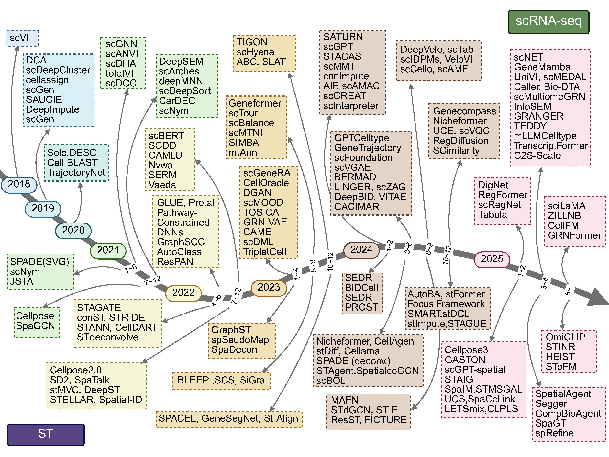
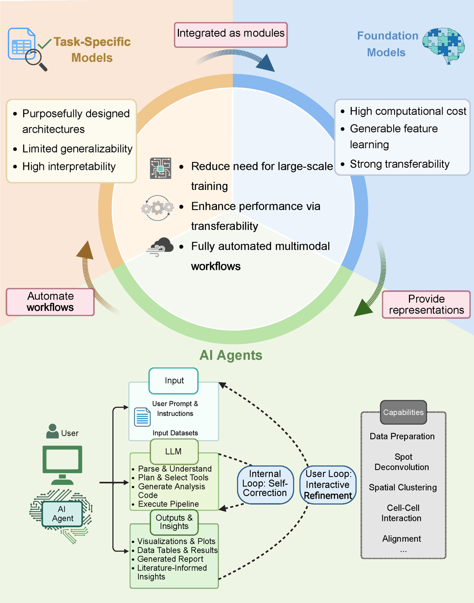

A Review of AI Revolution in Transcriptomics:
From Single Cells to Spatial Atlases
Overview
This comprehensive review systematically organizes over 150 AI tools and methods applied to single-cell RNA sequencing (scRNA-seq) and spatial transcriptomics (ST). We categorize these approaches into a tri-partite framework encompassing Task-specific Methods, Foundation Models, and AI Agents. This website serves as a supplement to our published review, providing visual representations, detailed tables, and navigable access to all reviewed tools.
Key Contributions: We synthesize the evolution of AI methods in transcriptomics, highlighting the transition from specialized, interpretable task-specific approaches to scalable, generalizable foundation models and fully automated AI agents. Our analysis reveals complementary strengths and opportunities for synergistic combinations of these three paradigms.
Figure 1: Evolution of AI Methods in Transcriptomics
Figure 2: AI Paradigm Framework for Transcriptomics
Explore the Full Review
📊 Task-specific Methods
Browse curated collections of specialized methods for scRNA-seq and spatial transcriptomics with detailed statistics and implementation information.
scRNA-seq Methods ST Methods🚀 Advanced Paradigms
Discover foundation models and AI agents representing the cutting edge of transcriptomics analysis with scale and automation capabilities.
Foundation Models AI Agents📌 About This Website
This website is primarily used for providing extra information about tools reviewed in our comprehensive survey. The main content is organized into Tables A, B, C, and D, which serve as the foundation for our analysis. View Table A (scRNA-seq Methods) | View Table B (ST Methods) | View Table C (Foundation Models) | View Table D (AI Agents)